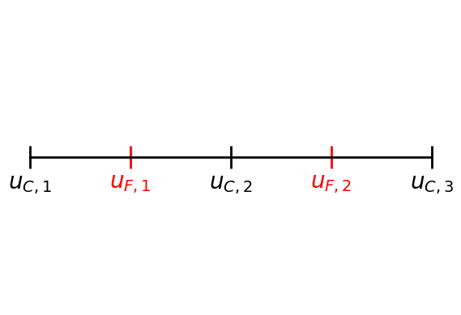

Example: Poisson Problem with homog. Dirichlet BC’s:
Contents
import numpy as np
from matplotlib import pyplot as plt
from helpers import *
%matplotlib inline
Example: Poisson Problem with homog. Dirichlet BC’s:#
\(u''(x) = b(x)\) on \(x\in(0,1)\)
\(u(0)=u(1)=0\)
1-dimensional grid#
fig = plt.figure(facecolor='white')
ax = plt.axes()
ax.set_yticks([])
ax.set_xticks([0,2,4])
ax.set_xticklabels(["$u_{C,1}$","$u_{C,2}$","$u_{C,3}$"])
ax.set_xticks([1,3], minor=True)
ax.set_xticklabels(["$u_{F,1}$", "$u_{F,2}$"], minor=True)
ax.tick_params(length=20, width=2, direction='inout', labelsize='20', which='both')
ax.tick_params(colors='r', which="minor")
ax.set_ylim(ymin=-.2, ymax=.2)
ax.get_yaxis().set_visible(False)
ax.spines['top'].set_visible(False)
ax.spines['right'].set_visible(False)
ax.spines['left'].set_visible(False)
ax.spines['bottom'].set_position('zero')
ax.spines['bottom'].set_linewidth(2)
ax.get_xaxis().set_visible(True)

Discretization#
Finite difference discretization yields the system
\[\begin{alignat*}{3}
&\begin{bmatrix}
2& -1& & & \\
-1& 2& -1& & \\
& -1& 2& -1& \\
& & -1& 2& -1\\
& & & -1& 2
\end{bmatrix}
&&\begin{bmatrix}
u_{C, 1}\\
{\color{red} u_{F,1}}\\
u_{C, 2}\\
{\color{red} u_{F,2}}\\
u_{C, 3}
\end{bmatrix}
&=
&\begin{bmatrix}
b_{C, 1}\\
{\color{red} b_{F,1}}\\
b_{C, 2}\\
{\color{red} b_{F,2}}\\
b_{C, 3}
\end{bmatrix}
\\
&\hspace{2cm} A &&\qquad u &= &\qquad b
\end{alignat*}\]
n_c = 3
n = 2*n_c - 1
a = 2.0 * np.eye(n) - np.diag(np.ones(n-1), 1) - np.diag(np.ones(n-1),-1)
a
array([[ 2., -1., 0., 0., 0.],
[-1., 2., -1., 0., 0.],
[ 0., -1., 2., -1., 0.],
[ 0., 0., -1., 2., -1.],
[ 0., 0., 0., -1., 2.]])
Prolongation/Interpolation#
\[\begin{split}
P =
\begin{bmatrix}
1 & &\\
1/2 & 1/2 &\\
& 1 & \\
& 1/2 & 1/2\\
& & 1
\end{bmatrix}
\end{split}\]
p = get_interpolation_matrix(n_c-1)
p
array([[1. , 0. , 0. ],
[0.5, 0.5, 0. ],
[0. , 1. , 0. ],
[0. , 0.5, 0.5],
[0. , 0. , 1. ]])
Pre- and Post-Smoothing: Gauss-Seidel#
\[\begin{split}
M = \begin{bmatrix}
2 & & & & \\
-1& 2 & & & \\
& -1 & 2 & & \\
& & -1 & 2 & \\
& & & -1 & 2 \\
\end{bmatrix}
\end{split}\]
m = np.tril(a)
m
array([[ 2., 0., 0., 0., 0.],
[-1., 2., 0., 0., 0.],
[ 0., -1., 2., 0., 0.],
[ 0., 0., -1., 2., 0.],
[ 0., 0., 0., -1., 2.]])
V-Cycle#
\[\begin{align*}
T &= (I-M^{-T}A)(I-PA_c^{-1}P^TA)(I-M^{-1}A)\\
I-X^{-1}A &= (I-M^{-T}A)(I-M^{-1}A)\\
X &= M(M + M^{T} - A)^{-1} M^T = \frac{1}{2}MM^T \\
\end{align*}\]
I = np.eye(n)
a_c = p.transpose() @ a @ p
t = (I - np.linalg.inv(m.transpose()) @ a) @ (I - p @ np.linalg.inv(a_c) @ p.transpose() @ a) @ (I - np.linalg.inv(m) @ a)
max(np.linalg.eigvals(t))
0.189116840205807
def multigrid_step(a, x, b):
n_c = len(b) // 2
p = get_interpolation_matrix(n_c)
a_c = p.transpose() @ a @ p
x = gauss_seidel_forward(a, x, b)
res = b - a @ x
res_c = p.transpose() @ res
err_c = np.linalg.solve(a_c, res_c)
x = x + p @ err_c
x = gauss_seidel_backward(a, x, b)
return x
Numerical Example#
x0 = np.random.randn(n)
b = a @ x0
x = np.zeros_like(x0)
it_steps = 10
errs = []
for i in range(it_steps):
x = multigrid_step(a, x, b)
errs.append(np.linalg.norm(x - x0))
plt.semilogy(np.arange(it_steps), errs, label="error")
plt.semilogy(np.arange(0, it_steps-1, 0.1), 0.18**np.arange(0, it_steps-1, 0.1), label="$y=0.2^x$")
fig = plt.gcf()
ax = plt.gca()
ax.set_xlabel("Iterations")
ax.set_ylabel("Error")
ax.set_title("Convergence of the Multigrid Method")
ax.legend()
<matplotlib.legend.Legend at 0x7ff8da3cda30>
Analysis#
\[\begin{align*}
\tilde{X} &= \mathrm{diag}(A) = 2I\\
\lambda(\tilde{X}^{-1}X) &= \frac{1}{4}\lambda_{\max}(MM^T)\\
MM^T &=
\begin{bmatrix}
4& -2& & &\\
-2& 5& -2& &\\
& -2& 5& -2&\\
& & -2& 5&-2\\
& & & -2&5
\end{bmatrix}
\end{align*}\]
By the Geshgorin circle theorem \(\lambda_{\max}(\tilde{X}^{-1}X) \leq 9/4 = 2.25\).
Use the left inverse
\[\begin{split}
\tilde R =
\begin{bmatrix}
1 &0 &0 &0 &0\\
0 &0 &1 &0 &0\\
0 &0 &0 &0 &1
\end{bmatrix}
\end{split}\]
to estimate \(K_{\tilde X}\):
\[\begin{align*}
K_{\tilde X} &\leq \max_{v\in\mathbf{R}^n\setminus \{0\}}\frac{\|(I-P\tilde R)v\|_{\tilde X}^2}{\|v\|_A^2}\\
&= \max_{v\in\mathbf{R}^n\setminus \{0\}}\frac{1}{1+\frac{C}{D}}\\
&= 1
\end{align*}\]
where
\[
C = \left(\frac{v_{C,1}+v_{C,2}}{2}\right)^2 + \left(\frac{v_{C,2}+v_{C,3}}{2}\right)^2 + \left(\frac{v_{C,1}}{2}\right)^2 + \left(\frac{v_{C,3}}{2}\right)^2
\]
and
\[
\left(v_{F,1}-\frac{v_{C,1}+v_{C,2}}{2}\right)^2+\left(v_{F,2}-\frac{v_{C,2}+v_{C,3}}{2}\right)^2
\]
r = np.array([[1,0,0,0,0],[0,0,1,0,0],[0,0,0,0,1]])
I-p@r
array([[ 0. , 0. , 0. , 0. , 0. ],
[-0.5, 1. , -0.5, 0. , 0. ],
[ 0. , 0. , 0. , 0. , 0. ],
[ 0. , 0. , -0.5, 1. , -0.5],
[ 0. , 0. , 0. , 0. , 0. ]])
Therefore, \(K_X \leq \lambda_{\max}(\tilde{X}^{-1}X) K_{\tilde X} \leq 2.25\).
\(\rho(T) = 1 - \frac{1}{K_X} \leq 1-\frac{1}{2.25}\approx 0.56\)
errs[-1]
1.1242710035288426e-07
np.linalg.norm(t**it_steps @ x0)
5.116555414805703e-08